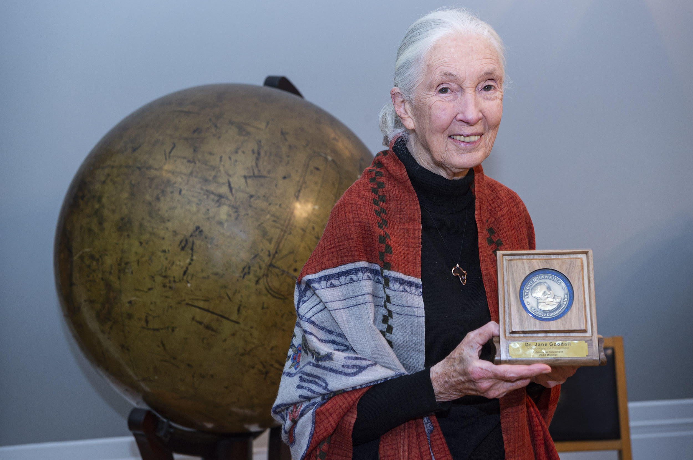

Here's some information about the amazing Dr. Jane Goodall!
Dr. Goodall is a primatologist and conservationist who has dedicated her life to studying and protecting chimpanzees and other endangered species. She has made groundbreaking discoveries about chimpanzee behavior, founded several organizations dedicated to conservation and animal welfare, and is an inspiring speaker and writer. Dr. Valerie Jane Morris-Goodall, best known simply as Jane Goodall, was born in Bournemouth, England, on April 3, 1934, to Margaret (Vanne) Myfanwe Joseph and Mortimer (Mort) Herbert Morris-Goodall. As a child, she had a natural love for the outdoors and animals. She had a much-loved dog, Rusty, a pony, and a tortoise, to name a few of their family pets. When Jane was about eight she read the Tarzan and Dr. Dolittle series and, in love with Africa, dreamed of traveling to work with the animals featured in her favorite books. Jane was unable to afford college after graduation and instead elected to attend secretarial school in South Kensington, where she perfected her typing, shorthand, and bookkeeping skills. She retained her dream of going to Africa to live among and learn from wild animals, and so she took on a few jobs including waitressing and working for a documentary film company, saving every penny she earned for her goal. At age 23, she left for Africa to visit a friend, whose family lived on a farm outside Nairobi, Kenya. In March 1957 Jane boarded a ship called the Kenya Castle to visit her friend and her family. There, Jane met famed paleoanthropologist Dr. Louis Seymour Bazett Leakey, who offered her a job at the local natural history museum. She worked there for a time before Leakey decided to send her to the Gombe Stream Game Reserve (what is today Gombe Stream National Park) in Tanzania to study wild chimpanzees. He felt her passion for and knowledge of animals and nature, high energy, and fortitude made her a great candidate to study the chimpanzees. Leakey felt that Jane’s lack of formal academic training was advantageous because she would not be biased by traditional thought and could study chimpanzees with an open mind. His hope was that by studying our closest living relatives (chimpanzees who share a common ancestor with humans) he could discover more about what early humans were like−things he could not learn from fossils alone. They just needed to secure funding for the project. In December 1958, Jane returned home to England and Leakey began to make arrangements for the expedition, securing the appropriate permissions from the government and raising funds. To prepare for her upcoming expedition Jane moved to London to work in the film library of Granada Television’s film library at the London Zoo where she spent her spare time studying the behavior of primates. In May 1960, Jane learned that Leakey had obtained funding from the Wilkie Brothers Foundation. Permits in hand, she boarded a plane to Nairobi. Gombe Stream National Park On July 14, 1960, Jane arrived by boat at the Gombe Stream Game Reserve on the eastern shore of Lake Tanganyika with her mother−local officials would not allow Jane to stay at Gombe without an escort−and a cook, Dominic. The early weeks at Gombe were challenging. Jane developed a fever−likely malaria−that delayed the start of her work. Once recovered, the rugged terrain and thick vegetation made traversing the reserve a challenge and often she hiked miles without seeing a chimpanzee. Finally, an older chimpanzee−whom Jane named David Greybeard, although the practice of naming one’s study subjects was taboo in ethology−began to allow Jane to watch him. As a high ranking male of the chimpanzee community, his acceptance meant other group members also allowed Jane to observe. It was David Greybeard whom Jane first witnessed using tools. She spotted the chimpanzee sticking blades of stiff grass into termite holes to extract termites. Excited, she telegraphed Dr. Leakey about her groundbreaking observation. He wrote back, “Now we must redefine ‘tool,’ redefine ‘man,’ or accept chimpanzees as humans.” During the years she studied at Gombe Stream National Park, she made three observations that challenged conventional scientific ideas: (1) chimps are omnivores, not herbivores and even hunt for meat; (2) chimps use tools; and (3) chimps make their tools (a trait previously used to define humans). Beyond the significance of her discoveries, it was Jane’s high standard for methods and ethics in behavioral studies may have had the greatest impact in the scientific community. Jane continued to work in the field and, with Leakey’s help, began her doctoral program without an undergraduate degree in 1962. At Cambridge University, she found herself at odds with senior scientists over the methods she used−how she had named the chimpanzees rather than using the more common numbering system, and for suggesting that the chimps have emotions and personalities. She further upset those in power at the university when she wrote her first book, ‘My Friends, the Wild Chimpanzees,’ published by National Geographic, aimed at the general public rather than an academic audience. The book was wildly popular, and her academic peers were outraged. Dr. Jane Goodall earned her Ph.D. on February 9, 1966, and continued to work at Gombe for the next twenty years. Conservation Jane shifted from scientist to conservationist and activist after attending a primatology conference in 1986, where she noticed all the presenters mentioned deforestation at their study sites worldwide. Jane herself had noticed some signs of deforestation along Lake Tanganyika at Gombe Stream National Park, but nothing significant. Then, in the early 1990s, she flew in a small plane over the park and was shocked to see large-scale deforestation on the other side of the park where local villages were rapidly expanding. Miles of bare hills stretched where once untouched forests had stood. Jane knew that she had to take action to protect the forest and preserve the critical habitat of the chimpanzees. Her first mission was to improve the conditions for chimpanzees held at medical research facilities. Jane helped set up several refuges for chimps freed from these facilities or those orphaned by the bushmeat trade. She established the Jane Goodall Institute (JGI) in 1977, a global community-centered conservation organization, and JGI’s program Roots & Shoots in 1991, which encourages young people around the world to be agents of change by participating in projects that protect the environment, wildlife, or their communities. She met with anyone she felt could be key to protecting places like Gombe Stream National Park and species such as her beloved chimpanzees and has been an advocate for protecting animals, spreading peace, and living in harmony with the environment. Jane is still hard at work today raising awareness and money to protect the chimpanzees, their habitats, and the planet we all share. She travels about 300 days a year giving speeches, talking to government officials and business people around the world encouraging them to support wildlife conservation and protect critical habitats.